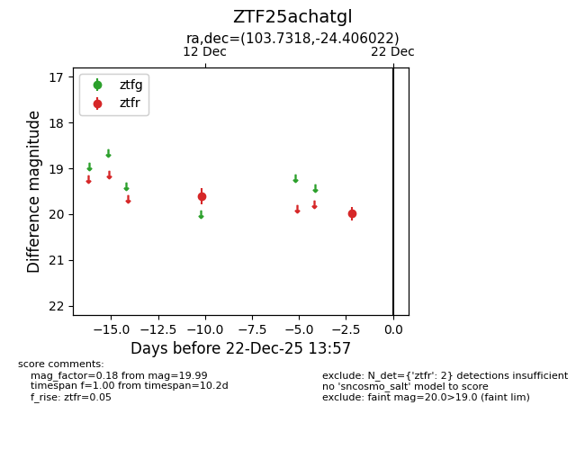
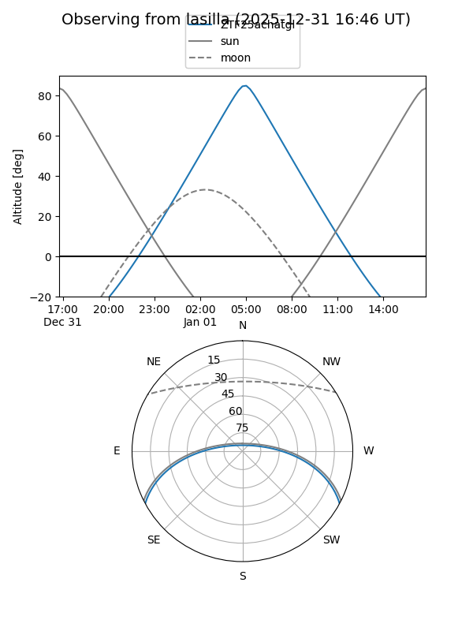
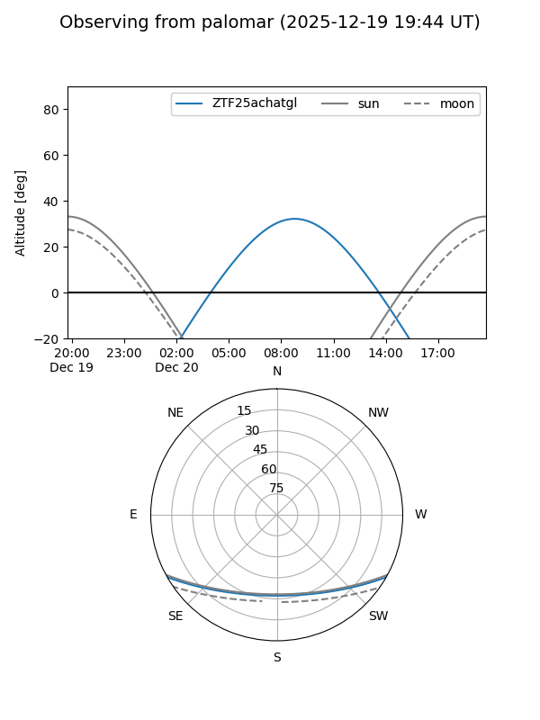

ZTF25achatgl
Target ZTF25achatgl at 2025-12-31 17:00
Aliases and brokers:
FINK:
Lasair:
ALeRCE:
alt names
ZTF25achatgl (ztf,fink_ztf)
Coordinates:
equatorial (ra, dec) = 103.7318,-24.40602
equatorial (HMS+DMS) = 06:54:55.64,-24:24:21.68
galactic (l, b) = (235.2657,-10.14112)
Flags:
Photometry:
last ztfr=19.99
2 ztfr detections
Lightcurve

Visibility


Additional plots